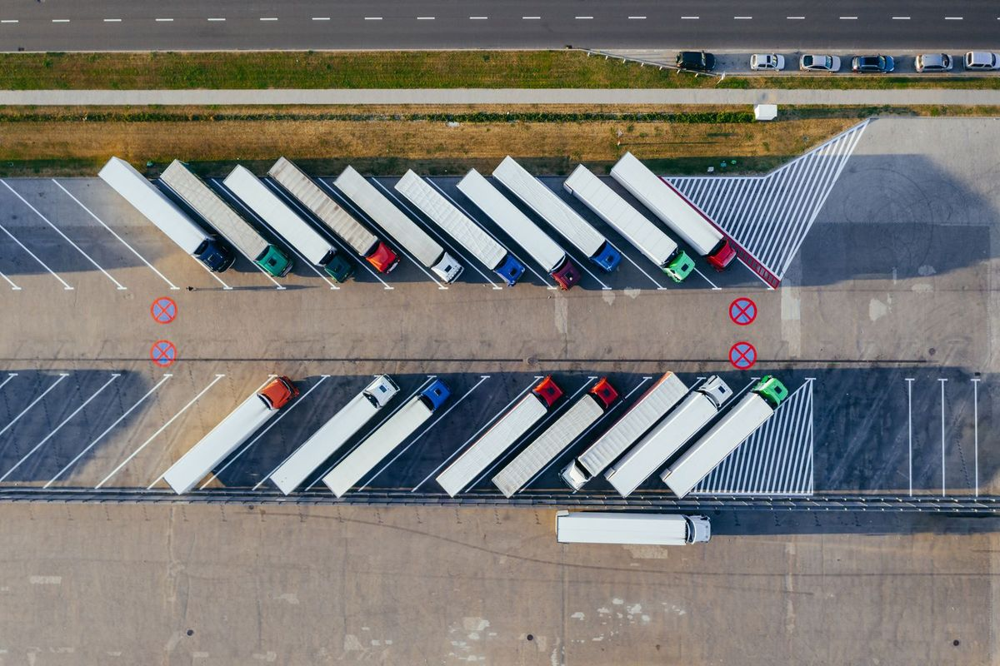

Direito Civil Vol. 1 2026 · 10 de novembro de 2026Todos os informativos

Caminhoneiro que espera mais de 5 horas para carregar tem direito a estadia?
O prazo de 5 horas conta da chegada do caminhão ao local de carga ou de descarga.
Desde abril de 2026, a estadia é de R$ 2,50 por tonelada e por hora, ou fração, além das 5 horas.
Quem carrega ou recebe a carga é obrigado a registrar o horário de chegada do caminhão.
Entenda melhor 2 min de leitura
O que diz a lei
A Lei 11.442/2007, que trata do transporte rodoviário de cargas, fixa em 5 horas o prazo máximo para carregar ou descarregar o caminhão, contadas da chegada ao endereço. Depois disso, é devido ao transportador autônomo (TAC) ou à empresa de transporte (ETC) um valor por tonelada e por hora de espera, ou fração.
A lei manda corrigir esse valor todo ano pelo INPC. A Agência Nacional de Transportes Terrestres (ANTT) divulga a atualização em abril: desde a Nota Técnica 4102/2026, o valor é de R$ 2,50 por tonelada/hora.
Como calcular
- Anote a hora de chegada e a hora de liberação.
- Desconte as 5 primeiras horas.
- Multiplique as horas que sobram pela capacidade total do caminhão, em toneladas, e por R$ 2,50.
A conta usa a capacidade total do veículo, e não só o peso que foi carregado.
Como provar a espera
O embarcador e o destinatário são obrigados a registrar a hora de chegada do caminhão no documento eletrônico de transporte (DT-e). Quem não cumpre essa obrigação pode ser multado pela ANTT em até 5% do valor da carga.
Além desse registro, ajudam a provar a espera:
- o ticket ou o registro de entrada na portaria;
- fotos e vídeos com data e hora, mostrando o caminhão no pátio ou na fila;
- o histórico do rastreador ou da localização do celular;
- mensagens trocadas com a expedição, a transportadora ou o contratante do frete;
- o horário da nota fiscal e do conhecimento de transporte (CT-e).
Como cobrar
A estadia é cobrada de quem contratou o frete. O primeiro passo é enviar a cobrança por escrito, com o cálculo e as provas da espera. Se o pagamento não acontecer, a cobrança pode ser feita na Justiça comum, que é a competente para os contratos de transporte autônomo de cargas, segundo o STF.
E o motorista com carteira assinada?
A estadia é paga ao autônomo ou à transportadora. Para o motorista empregado, a regra é outra: o tempo esperando carga e descarga conta como jornada de trabalho. Veja o informativo O tempo esperando carga e descarga conta como jornada do motorista?
Perguntas frequentes
O valor da estadia muda todo ano?
Sim. A lei manda atualizar o valor pelo INPC todos os anos (Lei 11.442/2007, art. 11, § 6º). O valor de R$ 2,50 por tonelada/hora foi divulgado pela ANTT em abril de 2026.
A conta usa o peso da carga ou a capacidade do caminhão?
A capacidade total de transporte do veículo, mesmo que ele não esteja cheio (Lei 11.442/2007, art. 11, § 7º).
A espera para carregar e a espera para descarregar contam?
Sim. O tempo é contado da chegada do caminhão tanto no local de origem quanto no de destino (Lei 11.442/2007, art. 11, § 8º).
Qual Justiça julga a cobrança da estadia?
A Justiça comum. O STF decidiu que a relação do transportador autônomo de cargas, regida pela Lei 11.442/2007, tem natureza comercial (ADC 48).
- Lei 11.442/2007, art. 11, §§ 5º a 9º (redação das Leis 13.103/2015 e 14.206/2021)
- ANTT, Nota Técnica SEI nº 4102/2026 (valor de R$ 2,50 por tonelada/hora)
- STF, ADC 48
Publicado em . Texto informativo. Cada situação depende de análise própria, com base nos documentos e nos fatos do caso.

Filipe Ferreira
Filipe Ferreira Santana, advogado, OAB/ES 37.159. Pós-graduação em Direito de Família em curso na FMP. Filiado ao IBDFAM.
O escritório Ferreira Advogados atua em Direito de Família, Sucessões, Direito Trabalhista, Direito Civil, Direito do Consumidor e Direito Previdenciário, com atendimento presencial em Linhares/ES e on-line.
Para tirar dúvidas sobre este assunto ou agendar um atendimento, o contato é pelo WhatsApp.